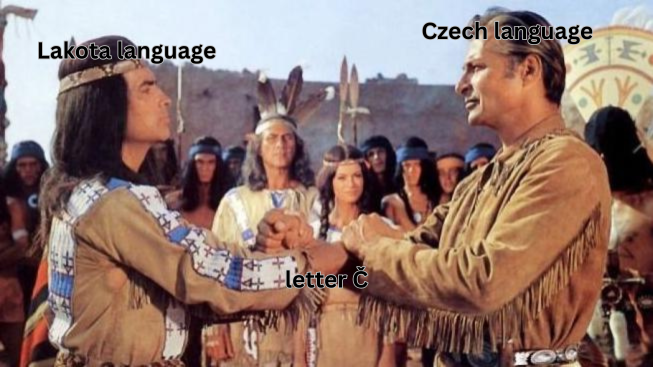

Nejzábavnější králičí nora měsíce:
Při prokrastinaci na NTS jsem narazil na tenhle tracklist od Wathéča radio. Pochopitelně mě překvapilo písmeno č v názvu rádia zaměřující se na tvorbu Native Americans a vysílající v lakotském jazyce. Je to kvůli tomu, že jeden český lingvista si v osmdesátých (+-) letech přečetl něco o lakotském jazyku (přičemž jediný jeho kontakt se Siouxy, kteří mluví lakotsky, v té době mohl být maximálně zpěv Blízko Little Big Horn) a rozhodl se, že by se jim hodila česká ortografie. Podle wiki přijetí “české” ortografie provází spory, ale to je fuk, pořád dobrá story.

Na tracklistu jsou i bangery. Arliene Nofchissey and Carnes Burson: Go My Son:
education is a ladder
to help us reach happiness
go and climb the laddergo my son
go and climb the ladder
Líbí se mi ten sentiment. Všechny vize lepšího světa zklamaly, zůstalo jen vzdělání. Přál bych si, aby to byla pravda. Ale v březnu jsme spolupsal grantové žádosti, dopisoval a poslal paper do recenzního řízení (na který bych se vykašlal, pokud by neexistoval tlak na jeho publikaci kvůli podmínkám grantu).
Též jsem strávil skoro tři týdny v Mannheimu, což bylo pochopitelně fajn. Vyprávět ostatním post-dokům a doktorandům, jak Bohemians 1905 ke klokanovi přišli, je milé. Slyšet na kolokviu, že můj výzkum by se dal rozdělit do několika minimal viable papers, už tak fajn není. Nemyslím si, že cílem výzkumu je napsat n+1 paperů.
People are already saying that LLMs can write a passable social science paper; unfortunately, our problem is not that we produce too few papers. Science is a strong link problem—what we need is new paradigms, not taller towers of journal articles. (Adam Mastroianni: Infinite Midwit)
Pochopitelně napsat co nejvíc paperů dává smysl z pohledu individuální kariéry. V Go My Son se ale zpívá “to help us reach happiness”, ne “to help me reach happiness”.
Možná je čas přehodnotit priority.
Quand j’étais enfant, le luxe, c’était pour moi les manteaux de fourrure, les robes longues et les villas au bord de la mer. Plus tard, j’ai cru que c’était de mener une vie d’intellectuel. Il me semble maintenant que c’est aussi de pouvoir vivre une passion pour un homme ou une femme. (Annie Ernaux: Passion simple)